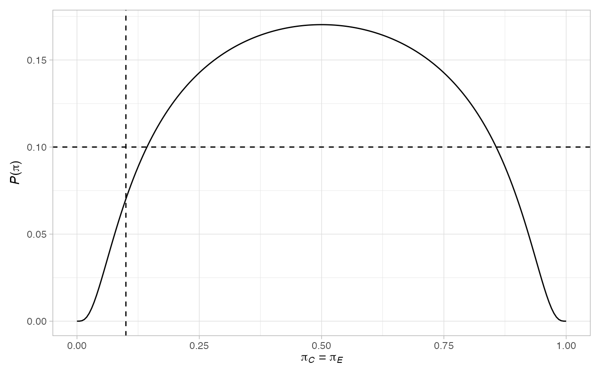
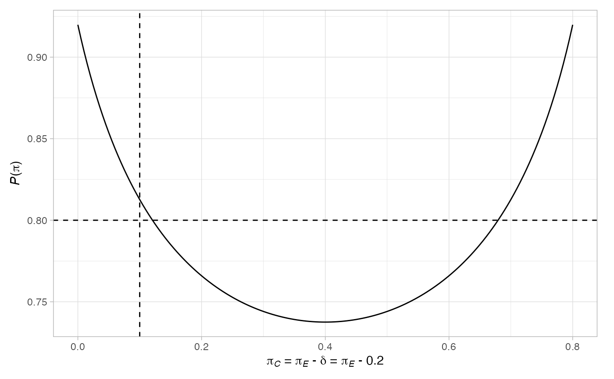

R/plot.ph2rand_des.R
plot.ph2rand_des.Rdplot.ph2rand_des plots the operating characteristics of a design
returned by des_one_stage or des_two_stage, under
a range of key response rate scenarios. For convenience, it also calls
plot.ph2rand_terminal to plot the terminal points of the
design.
# S3 method for ph2rand_des plot(x, k = 1:x$J, output = F, ...)
| x | An object of class |
|---|---|
| k | A |
| output | A |
| ... | Not currently used. |
If output = T, a list containing each of the
input parameters along with a list in the slot $plots,
which gives all of the available produced plots.
